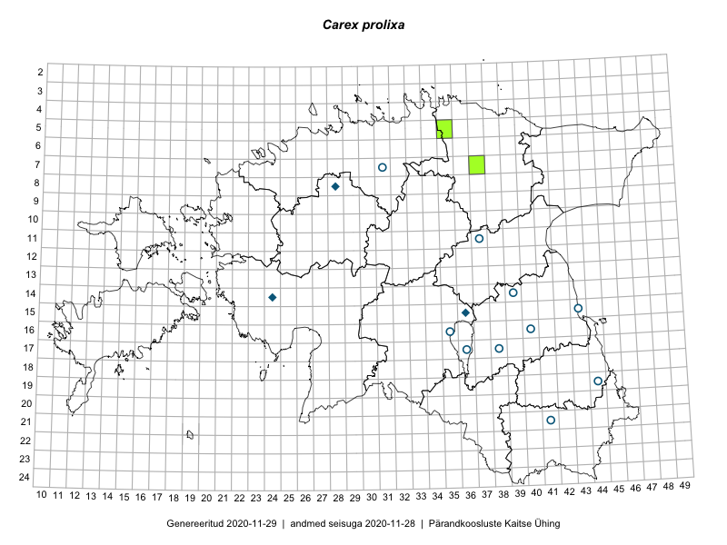

Carex prolixa — longus tarn
Cyperaceae :: Carex prolixa Fr. (18)

Kaart põhineb 18 kirjel:
herbaareksemplare 18
Taime kaasaegsed ja ajaloolised leiukohad asuvad 13 ruudus.
Tingmärgid ja ruutude arvud periooditi (U1 / V2 )
█ 2006–2020 (1/–)
◆/◇ 1971–2005 (3/0)
○ 1921–1970 (9/0)
+ kuni 1920 (0/0)
× hävinud (–/0)
? kaheldav (–/0)
| Ruut | Leidja(d) | Leiuaeg | Kirje |
|---|---|---|---|
| 16-40 | K. Eichwald | 1957-06-16 | TU274130: Carex prolixa Fr. |
| 16-40 | K. Eichwald | 1963-06-13 | TU274131: Carex prolixa Fr. |
| 15-43 | K. Eichwald | 1961-06-29 | TU274132: Carex prolixa Fr. |
| 15-43 | K. Eichwald | 1961-06-29 | TU274133: Carex prolixa Fr. |
| 05-35 | Eerik Leibak | 2017-06-21 | TAA0144898: Carex prolixa Fr. |
| 11-37 | Linda Viljasoo | 1958-07-13 | TAA0046490: Carex prolixa Fr. |
| 07-31 | E. Muru | 1958-07-06 | TAA0046492: Carex prolixa Fr. |
| 07-31 | E. Muru | 1958-07-06 | TAA0046493: Carex prolixa Fr. |
| 11-37 | M. Kask, Linda Viljasoo | 1957-06-01 | TAA0046494: Carex prolixa Fr. |
| 21-41 | Linda Viljasoo | 1957-06-16 | TAA0046495: Carex prolixa Fr. |
| 19-44 | Vilma Kuusk | 1955-07-25 | TAA0046496: Carex prolixa Fr. |
| 16-35 | M. Kask | 1948-07-09 | TAA0046497: Carex prolixa Fr. |
| 16-35 | M. Kask | 1948-07-09 | TAA0046498: Carex prolixa Fr. |
| 15-36 | Malle Leht | 1997-07-08 | TAA0046499: Carex prolixa Fr. |
| 08-28 | M. Kask, Liivia Laasimer, Linda Viljasoo | 1979-07-04 | TAA0046501: Carex prolixa Fr. |
| 17-36 | Linda Viljasoo | 1962-06-29 | TAA0046502: Carex prolixa Fr. |
| 14-24 | Linda Viljasoo | 1982-08-02 | TAA0046503: Carex prolixa Fr. |
| 17-38 | M. Kask | 1948-06-03 | TAA0046504: Carex prolixa Fr. |
Ruutude arv uue atlase andmekogu järgi. Muuhulgas arvestab vanemat herbaariumi, 2005. aasta atlase välitöölehtedelt uuesti digitaliseeritud andmeid jne. Uue atlase andmekogust pärinevad andmed on kaardile kantud siniste sümbolitega.↩︎
Ruutude arv 2005. aasta atlase (Kukk, T., Kull, T., Eesti taimede levikuatlas. Eesti Maaülikool, Põllumajandus- ja Keskkonnainstituut, Tartu, 2005) järgi. Andmeallikana on kasutatud levik.exe programmi, kus igas ruudus on registreeritud vaid uusim leid. Seetõttu on vanemate perioodide kohta andmed puudulikud. Kasutatud levik.exe andmestikus leidub mõningaid kõrvalekaldeid atlase trükis ilmunud versioonist, sagedamini tarnade ja käpaliste seas. Lisaks leidub selles andmestikus valik liike (peamiselt väheste leidudega tulnuktaimed), mille kaarte trükis ei avaldatud. Vana atlase andmed ruutudest, milles ei ole uue atlase andmekogus leide enne 2006. aastat, on kaardil esitatud punaste sümbolitega. Vana atlase andmetel hävinud ja kaheldavaid leiukohti pole hilisemate (taas)leidude põhjal korrigeeritud.↩︎